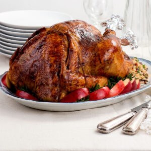

Momma's Famous Turkey

Description
Try this Dominican turkey and serve exquisitely seasoned, impossibly juicy, meat. A traditional Christmas dish rediscovered, which you can also serve for Thanksgiving or just any occasion that calls for a spectacular centerpiece.
Ingredients
- 1 small red onion, chopped
- 6 clove garlic
- ¼ cup capers
- 3 tablespoons salt
- 1 bunch parsley
- Juice of 1 lime, (or lemon)
- ¼ cubanela (cubanelle pepper), or bell pepper, chopped
- ½ tablespoon pepper (freshly-cracked, or ground), freshly cracked
- 1 whole turkey, About 9 lb [4 kg] unbrined turkey, thawed
- 1 tablespoon of browning
- ⅓ cup butter (salted), at room temperature, divided
Steps
- Making the marinade: Mix the ingredients (onion, garlic cloves, capers, salt, parsley, lime juice, cubanela, and black pepper) for the seasoning and blend in the food processor to obtain a coarse paste.
- Separate skin: Slowly work your hand between the skin and the turkey meat, making sure not to pierce through the skin, separating as much as possible all the way down to the legs and neck (we're not skinning the turkey, just making space to rub seasoning under the skin).
- Seasoning the turkey: With a sharp knife carve 4 small holes into each side of the breast meat (don't pierce the skin!) and stuff them with the seasoning. Rub the rest of the seasoning under the turkey skin and inside the cavity.
Place the turkey in a lidded container, or cover with aluminum foil, and refrigerate for 24 to 36 hours.
Take out of the fridge a couple of hours before roasting to let it reach room temperature, while it does, make the stuffing.
- Prepare for roasting: Heat the oven at 325 ºF [160 ºC].
Spread ¾ of the butter under the turkey skin. Stuff the holes you carved with some butter, and set aside the rest of the butter for later use.
Stuff the turkey with the partially-cooked rice.
- Stuffing: Place on a baking tray with a wire rack (see below the recipe).
Pull the skin to cover the turkey all over. Tie the legs with twine. Tie the wings tight against the skin by wrapping twine around the turkey.
Paint all over the skin with browning.
- Roasting: Roast the turkey for 2½ hours, brushing all the exposed skin with butter every half hour. If any part starts to brown faster than the others, cover it with aluminum foil.
- Check for doneness: Once the 2½ hours have passed, test the turkey breast with a meat thermometer (see below the recipe). It should have reached 165 °F [74 ºC] when you hit the bone. You should also test inside the leg where it hits the ribs. If it hasn't reached that temperature, cook for another 20 minutes, and test again.
If you don't have a meat thermometer, stab inside the thigh all the way to the bone, it is done if the juices run clear, and there's no sign of blood or pink meat. Cook for another 20 minutes, if necessary, and test again.
- Serving: Once done, remove from the oven and cover the pan with a clean tea towel. Let it rest for 20 minutes before serving.
When it is time to serve, mix the stuffing with the rest of the reserved moro, heat the mixture until steam comes out, and stuff again, leaving part of the rice visible.